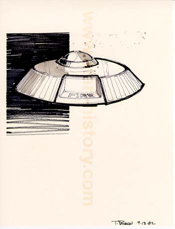
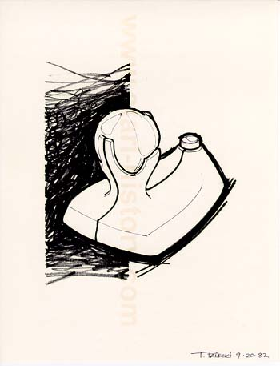
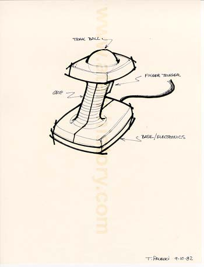
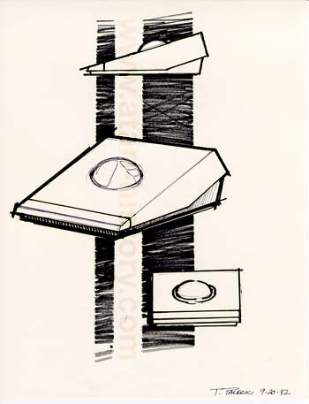

Nope, the aliens aren't attacking, its just another example of
a trakball concept design from September 1982.

Now here is one of my favorites, this would have really caught
the attention of a lot of people if this had been the final design
of the Atari Trakball. However as many will surely recognize,
a similar design was used for a 3D virtual reality controller.

Now here is a very realistic design which would have been well
received and would have worked very well, a Trakball stick grip
controller, nice idea and design.

This is the more classic Atari 2700 wedge shaped design, more
of the de facto standard Atari style.